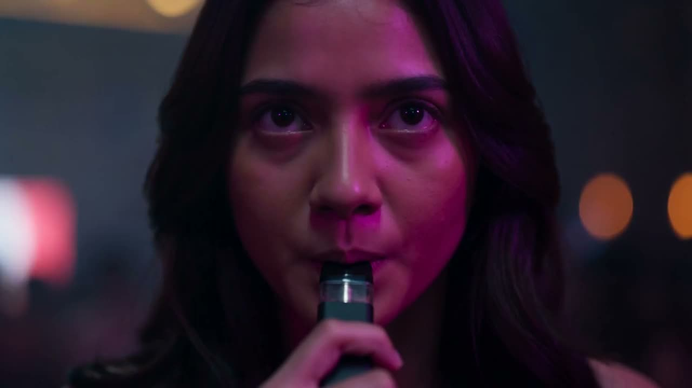
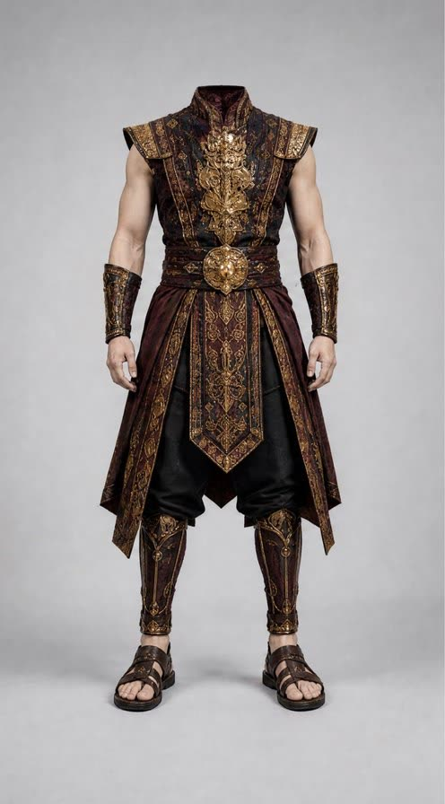
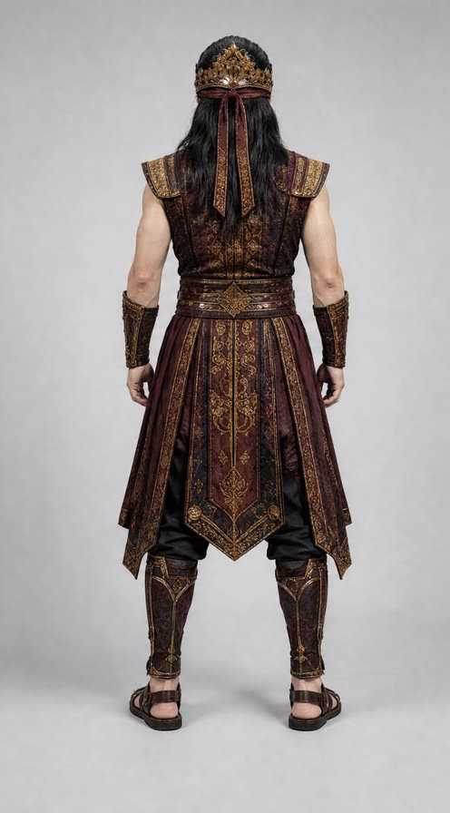
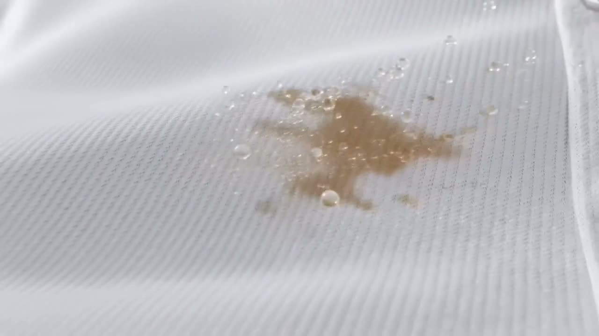
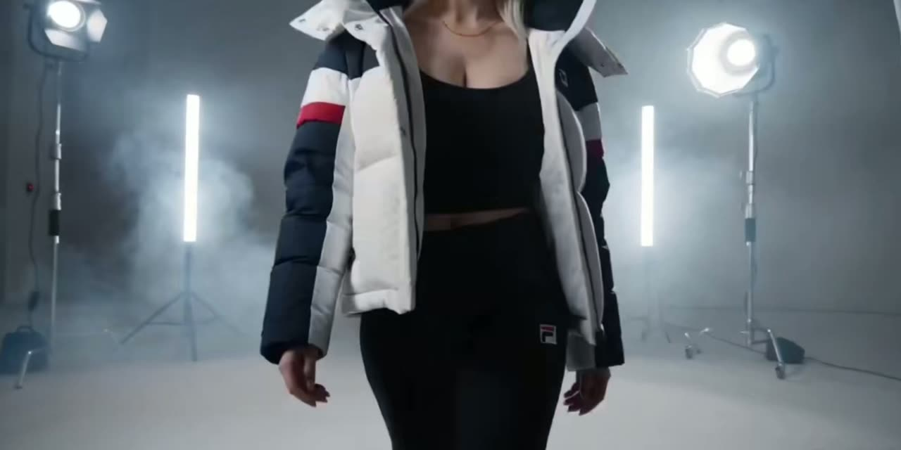

Iklan & TVC
Iklan televisi, digital, dan bioskop, dari naskah sampai master siap tayang, lengkap dengan potongan pendek untuk media sosial.


Otak manusia, kecepatan AI.
Tidak ada lokasi syuting. Tidak ada lampu set. Semua gambar kami lahir di kamar gelap: sutradara, penulis, dan desainer kami memutuskan cerita, wajah, cahaya, dan setiap potongan, lalu AI mengerjakan gambarnya.
Kami membuat iklan, film, dan serial untuk brand, lembaga pemerintah, dan agensi. Hasilnya siap tayang di televisi, bioskop, dan media sosial. Lihat karya
Sektor & format
Dari satu iklan sampai satu dunia serial, semuanya lewat lembar kontak yang sama.
Iklan televisi, digital, dan bioskop, dari naskah sampai master siap tayang, lengkap dengan potongan pendek untuk media sosial.

Serial drama, film pendek, dan film profil. Dunia, kostum, dan pemainnya tetap sama dari adegan ke adegan.


Karakter dengan lembar depan, belakang, dan wajah, siap dipakai lintas episode, iklan, dan media sosial.



Foto produk dan mock-up kemasan tanpa studio foto. Cahaya, material, dan latar diatur per bidikan.


Setiap keputusan kreatif dipegang orang. AI mengerjakan bagian yang dulu butuh kru, lokasi, dan jadwal panjang.
Garis merah menandai keputusan yang diambil orang.
Untuk agensi dan rumah produksi, kami bekerja tanpa nama: NDA sebelum brief, tidak pernah menghubungi klien kalian, dan semua materi jadi milik kalian. Jadwal dan format disepakati per proyek.
Bicara soal kerja sama agensiKontak
Ceritakan apa yang mau kalian buat. Ide setengah jadi juga boleh.
ShowreelStudio